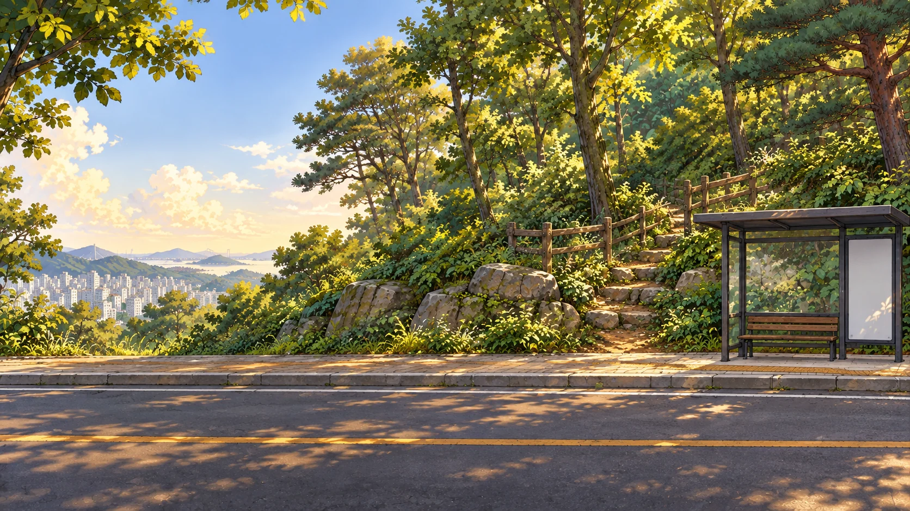
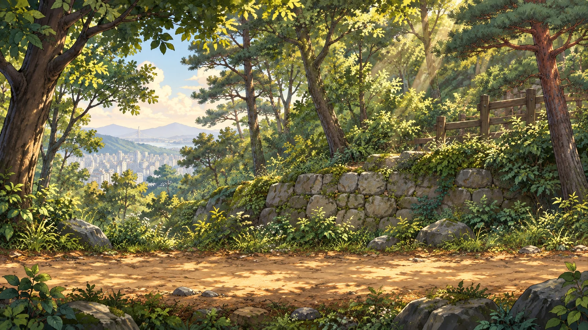
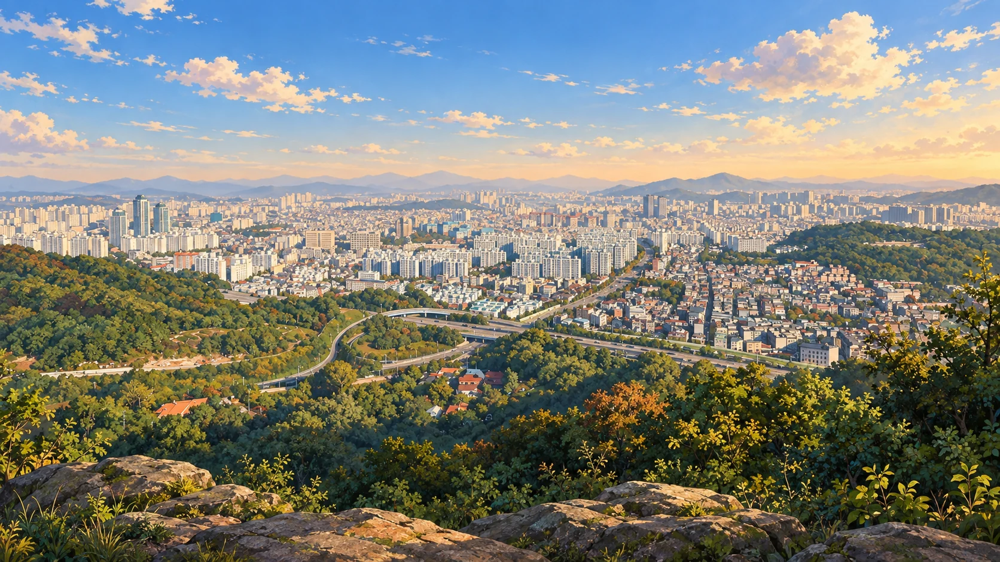

경기장의 빛을 안고, 도시를 내려다보는 산으로
이번 정류장은
문학산입니다.
숲길을 오르고, 시선의 끝을 찾아요.
민우와 서연의 두 번째 여행이 시작됩니다.

경기장의 빛을 안고, 도시를 내려다보는 산으로
숲길을 오르고, 시선의 끝을 찾아요.
민우와 서연의 두 번째 여행이 시작됩니다.
 문학산 자락을 재구성한 창작 장면
문학산 자락을 재구성한 창작 장면
 문학산을 참고한 창작 일러스트
문학산을 참고한 창작 일러스트TRAVEL NOTE · 문학산

첫 번째 체험 · 민우의 문학산 등산
민우는 자동으로 이동해요.
점프 버튼 하나로 돌과 바위를 넘어 주세요.
가까이 오면
한 번 점프해요.
먼저 점프하고,
공중에서 한 번 더!
“높은 바위는 한 번 점프로 넘을 수 없어.
공중에서 한 번 더 눌러 높이 올라가 줘!”
부딪히면 그 장애물 앞에서 다시 도전해요.
키보드는 Space 또는 ↑를 사용할 수 있어요.
CHAPTER 02 · 다음 빛을 찾아서
민우와 서연이 수봉공원행 매스투어 버스에 오릅니다.

CHAPTER 02 COMPLETE · 문학산
숲길과 역사를 만나고,
정상에서 접선과 삼각비의 비밀을 발견했어요.
다음 정류장 · 수봉공원
두 빛을 모아 공원의 밤을 밝혀 주세요.
MUNHAKSAN · HORIZON EXPLORER
숲길을 올라, 희미해진 전망을 되찾아요.
정상에서 만나는 빛의 비밀은 삼각비!
염민찬 학생의 점프 등산과 삼각비 아이디어를 이어 만들었어요.
01 · 문학산 숲길
돌이 다가오면 점프! 공중에서 한 번 더 누를 수 있어요.
등산길을 재구성한 게임 공간이동은 자동이에요.
점프 버튼을 눌러 돌을 넘어요. 두 번 누르면 더 높이!
실제 전망을 참고한 창작 일러스트정상에 도착했어요
풍경을 좌우로 둘러본 뒤, 수첩 속 지구 모형으로 관측해요.
02 · 시선 맞추기
관측 모형: 반지름 6,400 km의 구형 지구, 관측 높이 217m. 지형과 대기 굴절은 생략했어요. 구하는 것은 지표를 따라가는 거리가 아닌 곧은 시선의 거리예요.
MATHEMATICAL LIGHT · RESTORED
6,400 × 0.00824 = 52.736
약 52.7 km
문학산 · 멀리 바라보는 빛
✦점프하며 오르고, 접선을 찾고,
삼각비로 시선의 거리를 알아냈어요.
기록을 저장하지 못했어요. 창을 닫기 전까지 계속 여행할 수 있습니다.